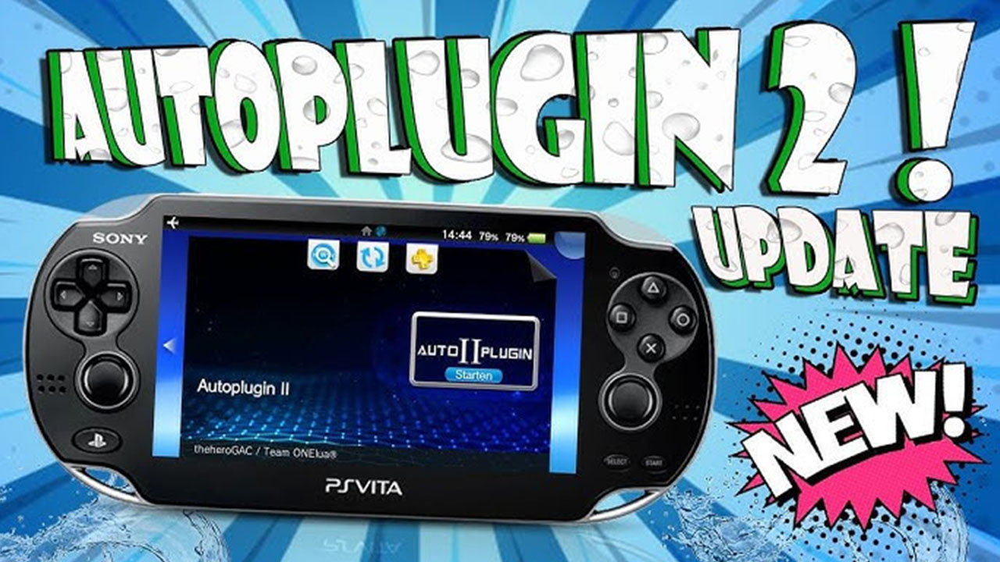

AutoPlugin 2
Autoplugin para PSVITA es una herramienta hombrew que te permite instalar o desinstalar los siguientes complementos y plugins con un solo clic (en ux0 o ur0 o ur0 para SD2VITA).
Para esta Guia
Requisitos para este tutorial
- PC o Notebook (Para pasar Archivos)
Empezando este Tutorial
- Descargamos los archivos
- Descomprimimos los archivos .rar o .zip
- AutoPlugin II v?.??
- Con la última versión disponible
- Una vez descargado nuestro archivo
- Lo extraemos y copiamos
- Para pasarlo a nuestra consola lo podemos pasar mediante USB o FTP
- Iniciamos VitaShell y le damos al dependiendo de lo hemos configurado nos saldrá USB o FTP.
- Una vez pasada a nuestra consola lo instalamos el archivo .vpk en nuestra consola
- Terminada la instalación salimos de VitaShell y en el menú de la consola tendremos el nuevo Icono flotando
- Buscamos la nueva Burbuja de nuestra aplicación
- Abrimos AutoPlugin2 para instalar los plugin necesarios en nuestra consola lo que yo te recomiendo
- una vez emos seleccionado los plugin le damos al botón
- puede ser que nos pida reiniciar la consola la reiniciamos
- Cuidado con los plugin que se instalan en la consola podemos tener problemas como quedarse en negro, reinicio continuo y otros problemas más tener mucho en cuenta que estamos instalando
- y listo
Recomendaciones
| Plugins | Descripcion |
|---|---|
| Adrenaline by TheOfficialFloW (Fix double touch) | Permite ejecutar Adrenaline con un solo toque |
| AnalogsEnhancer by Rinnagatamente/Yoti | Plugin permite configurar la deadzone (cuanto mueves el analogo antes de detectar movimiento) y reescalado de software (reinterpreta las entradas, añadiendo libertad o haciendo los analogos mas toscos según se necesite) de los analogicos |
| Download Enabler by TheOfficialFlow (VitaTweaks) | Permite descargar archivos a traves del navegador |
| ds3vita by xerpi | para controlar desde el mando de PS3 |
| ds4Touch by MERLev | añade soporte para el touchpad del DualShock4 (como ds4vita) a las PSTV y PS Vita con el Plugin MiniVitaTV |
| ds4vita by xerpi | para controlar desde el mando de PS4 |
| FdFix by TheOfficialFlow | Este Plugin arregla un problema en los Homebrews de PS Vita en donde los descriptores de archivos eraninvalidados despues de suspender y resumir la consola |
| FreePSM by Li | Habilita InAppPurchases (compras en la app)de Debug PSM en la ejecucion de PSM comercial. Basicamente permite desbloquear de manera offine y gratis las compras en app de PSM |
| ftpeverywhere by teakhanirons v1.0 ]Otra Forma No Instalar | Para habilitar FTP desde cualquier lado de la consola |
| Kubridge by TheOfficialFlow/bythos14 | Modulo Puente Kernel-Usuario para PS Vita (Requerido por el Port de MaxPayne) |
| LCD Colour Space Changer by cuevavirus | Cambia el Espacio de Color de la pantalla LCD (los Colores que posee la pantalla, haciendo una especie de emulacion de los colores de una Pantalla OLED) con un click y fuerza el Espacio de Cie en aplicaciones de PSPEmu (como juegos de PSP o PS One) (Solo en PS Vita 2000) |
| Music Premium by cuevavirus | Permite escuchar musica de fondo (a traves de la app oficial) en cualquier juego o aplicación |
| NoAVLS by Li | Permite desactivar permanentemente AVLS en PS Vitas que no pueden desactivarlas (forzado) |
| NoNpDrm by TheOfficialFlow | Permite evitar la proteccion DRM en cualquier contenido de PS Vita |
| NoPsmDrm by frangarcj | Permite evitar la proteccion DRM en el contenido de PSM |
| NoPspEmuDrm by Li | Un Plugin que permite evitar todos los chequeos de DRM de PSPEmu, lo que permite jugar tus respaldos digitales de juegos de PSP y PS1, o de juegos que poseas legalmente pero en otro cuenta PSN |
| PSVshell by Electry v1.2 Beta Otra Forma no Instalar | para cambiar los ajuste del reloj un overclock a la consola (para habilitar select+arriba) |
| PSVshellPlus by GrapheneCt | Plugin Avanzado para realizar Overclocking e Info para PS Vita. Posee una barra de aceleracion de GPU, trackeo preciso de la Memoria y los FPS, e integrado totalmente con Quick Menu (menu que sale al mantener presionado el boton PS) |
| Quick Menu Plus by cuevavirus | Quick Menu Plus fusiona los Plugins Quick Power, Quick Volume, y Rapidmenu, asi como tambien añade nuevas funciones. Boton de Apagar, Reiniciar y Suspender, asi como hace configurables el boton de Apagado, barra (slider) de Volumen, Reducir el tiempo de apertura del Menu Rapido, Estilos de Fondo del Menu Rapido personalizados |
| reFOOD by FAPS Team | Un Plugin de PS Vita para correr programas que no pueden ser desencriptados adecuadamente |
| Reparch reLoaded by SonicMastr | Modificacion de rePatch que añade soporte para la migracion de las carpetas Homebrew app0: y ux0:/data hacia otras particiones, permitiendo asi jugar con datos en diferentes dispositivos de almacenamiento(como ur0 o una0) |
| Shellsecbat by OperationNT414C | Porcentaje de bateria y segundos en la barra de estado: Fusion de ShellBat y LastSeconds (SELECT + L o SELECT + R muestra el estado del dispositivo) |
| udcd_uvc by xerpi | Permite que la PS Vita funcione como un dispositivo UVC para transmitir su pantalla a traves de USB a su computadora (Version Oficial) |
| Vitacheat by FinalCheat | Usa Cheats (trucos) en juegos de PS Vita. Solo para 3,65/3,68 (L + DERECHA) |
| MiniVitaTV by TheOfficialFloW beta 0.5 | Permite jugar multijugador local en tu PS Vita con hasta 4 amigos en juegos compatibles (Solo para mas de un control) |
×